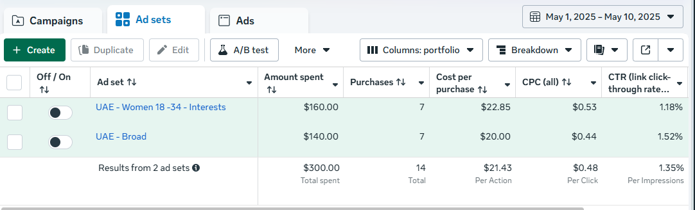

Almost every Meta Ads problem traces back to one of five areas: structure, tracking, creative, audience, or budget/scaling. When performance is off and you don't know why, guessing wastes both time and money. A structured audit doesn't.
This is the exact 25-point checklist we run before we ever touch a client's campaigns. Grab your Ads Manager and go through it section by section — takes about an hour.
Section 1: Account Structure
- Do you have separate campaigns for prospecting (TOF), engagement retargeting (MOF), and purchase retargeting (BOF) — or is everything blended into one campaign?
- Is budget allocated roughly 60-70% TOF, 15-20% MOF, 10-15% BOF?
- Are your campaign objectives aligned to what you actually want (Purchase for eCommerce, not Traffic or Engagement)?
- Do you have more than 3-4 active ad sets per campaign competing for the same audience and budget?
- Is Advantage+ Shopping Campaigns (or manual campaigns) being used deliberately, not just left on default settings?
Section 2: Tracking & Data Quality
- Is the Conversions API (CAPI) connected in addition to the browser pixel?
- Is your Event Match Quality (EMQ) score above 7.0 for the Purchase event?
- Is event deduplication configured correctly between pixel and CAPI (check for double-counted purchases)?
- Does Meta-reported purchase volume match your Shopify/CRM purchase volume within roughly 10-15%?
- Are you tracking value-based events (purchase value, not just purchase count) for ROAS accuracy?

Section 3: Creative
- Has new creative been tested in the last 14 days?
- Is any ad running above 3.0 frequency in a 7-day window (fatigue signal)?
- Are you testing at least 3 distinct angles (not just visual variations of the same angle)?
- Do you have a mix of formats — UGC, static, carousel — rather than relying on one format exclusively?
- Are losing ads being killed within 72 hours / $50-100 spend, or left running out of inertia?
Want the full testing methodology behind items 13-17?
Read our creative testing framework →Section 4: Audience & Targeting
- Has your ad set reached over 60% of its total audience in the last 30 days (saturation signal)?
- Are you relying on a single lookalike seed, or testing multiple (purchasers, high-value purchasers, repeat buyers, email subscribers)?
- Have you tested broad targeting (age/gender/location only) against interest-stacked audiences?
- Is audience overlap between ad sets checked periodically (competing against yourself for the same users)?
- If applicable, have you tested expansion into adjacent geographies or markets?
Section 5: Budget & Scaling
- Have budget increases stayed within the 20-30% incremental rule, or have there been sudden 2-3x jumps?
- Is testing budget (20-30% minimum) protected even when a winning campaign is being scaled?
- Are you tracking CPA/ROAS by funnel layer (TOF/MOF/BOF) separately, not just as one blended account number?
- Is there a documented plan for scaling ahead of major sales periods, rather than reacting on the day?
- Are you looking at LTV/repeat purchase rate, or judging every campaign purely on first-order CPA?
Key Takeaway
If you check "no" on more than 5-6 of these 25 items, that's very likely where your performance problem is hiding — not in "the algorithm" or "the market."
How to Score Yourself
- 20-25 checked: Your account fundamentals are solid. Performance issues are more likely creative fatigue or market-level, not structural.
- 13-19 checked: There are real gaps worth fixing — likely explaining at least part of any CPA increase you've seen.
- Below 13: Structural issues are very likely the primary driver of underperformance. Start with tracking (Section 2) and structure (Section 1) first — everything else optimizes on top of those two foundations.
In nearly every audit we run, the first two or three unchecked items — usually in tracking or structure — explain 80% of the performance gap. Fix those before touching creative or audiences.
What to Do With Your Results
Work through gaps in this order: tracking first (everything else optimizes on bad data otherwise), then structure (funnel layering), then creative, then audience, then scaling pace. This mirrors the exact diagnostic sequence in our guide on why CPA keeps rising — fixing things out of order usually means re-doing work once you find the real root cause underneath.
Frequently Asked Questions
How often should I audit my Meta Ads account?
Run a full structural audit every 60-90 days, and a lighter tracking/creative check monthly. If CPA has been climbing for more than two weeks with no clear cause, run the audit immediately rather than waiting for the scheduled check.
What's the most commonly missed item in a Meta Ads audit?
Event Match Quality (EMQ) and Conversions API deduplication. Most brands check whether the pixel is firing, but far fewer check whether Meta is receiving high-quality, deduplicated purchase data — which directly affects how well the algorithm can optimize.
Can I audit my own Meta Ads account without an agency?
Yes, a structural audit using a checklist like this one is something any founder with Ads Manager access can run themselves. What's harder to self-audit is benchmarking your numbers against what's actually achievable in your industry and market — that context usually comes from having managed many accounts.
How long does a full Meta Ads account audit take?
A thorough 25-point audit takes 45-90 minutes for someone familiar with Ads Manager, longer if you're also cross-referencing Shopify or CRM data to verify tracking accuracy.
The Bottom Line
Most "Meta Ads stopped working" moments aren't mysteries — they're a handful of unchecked boxes on a list exactly like this one. Run the audit before you rebuild anything, switch agencies, or pull budget. It'll tell you exactly where to spend your next hour of effort.